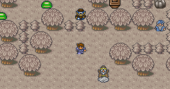

Bienvenido a preguntas
Preguntas con respuestas, claro.

Preguntas con respuestas, claro.
Viene de un juego llamado Final Fantasy Mystic Quest, un juego que obtuve cuando era niño gracias a mi padre, quien compró una SNES. Es un juego que nunca pude terminar porque estaba en inglés y yo era pequeño. Desde entonces recuerdo escuchar su música, y nunca pensé que se quedaría tan grabada en mi cabeza.
Recuerdo que en una parte del juego una chica se unía a tu equipo y te ayudaba en las batallas con su hacha. Yo me apoyaba mucho en su fuerza, pero en cierto punto te enfrentabas a un árbol rojo (que en realidad creo que era un toro rojo, no lo recuerdo al 100%). Ella caía en batalla, te dejaba su hacha y quedaba en cama. De pequeño siempre intentaba evitar que terminara en cama, quería que siguiera acompañándome en el equipo.
